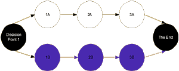
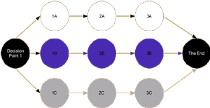
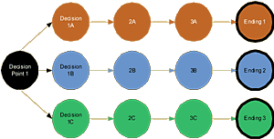
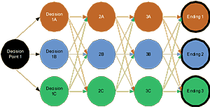
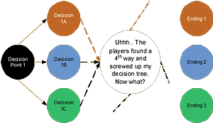
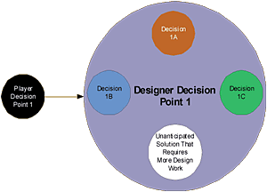

|
Show Me the Pathby Jessica Mulligan Last column, we discussed the futility of trying to hardwire a static storyline into a dynamic, ever-changing playfield such as a persistent world. That sparked a pretty interesting discussion in the forums here, with pros from such games as Meridian 59 and Dark Age of Camelot adding their opinion. If you're interested in stories in persistent worlds, that thread is well worth checking out. OK, so if we can't obtain good results from a static story, just what can we do in a persistent world with storyline related goodness? To understand how interactive storylines work best in a persistent world, we need to take a hard look at the different types of storyline construction available and see which ones or parts of them actually fit the online niche. We'll play around with some charts, because showing these things visually can make it easier to understand and because I have Visio and wish to inflict many charts on the reader while I play around with it. Deal. For now, we're not going to worry about player-generated content or open-ended conflict as content, as with Lineage or Dark Age of Camelot. Those are separate subjects with their own issues. This will simply be about what type of storyline design works best in a persistent world. We'll simply acknowledge that designer-created storylines are only one type of content (and not necessarily the best of the lot, either) and go from there. Let's start at the beginning: persistent world role-playing games are not TV or movies. Can we all agree on that? People aren't paying $10 to $15 per month to sit back and watch a storyline unfold, a'la Figure 1: This is your basic television or movie storyline. No decision points, no decision tree, just a linear progression of events from an arbitrary starting point until a writer-decided ending is reached. It works well for entertainment in which the purpose is to just kick back and watch what the characters are doing, preferably with popcorn, a hot dog and a Pepsi. No one partaking of this type of entertainment expects to have any influence on the outcome of the story. It can still be a lot of fun and very entertaining, sometimes enlightening, but it ain't interactive. There have been a number of solo home games over the years that have used this method and none of them have done very well, sales-wise. You don't play this kind of 'game,' you watch it. Gamers want a little more than that, and a little is pretty much what they get, most of the time. Gamers love to feel that their decisions have an influence on not just the outcome, but also the progression of the story; this is what they mean by 'interactive gaming.' What a designer means by interactive gaming is a bit different. When a plot and storyline are present, the average solo home game generally consists of the 'interactive' storyline seen in Figure 2:  Note that a decision point is present; the player gets to decide whether to do A or B and the story branches from there. However, the branches are chimeras; there really is only one ending, with all branches looping back to it. This may be spiced up with scoring the player on how many goodies s/he snapped up, enemies were destroyed and 'hidden places' found along the way, but there really is only one possible ending, i.e. you win or lose. There may be more decision points available that create more temporary branches, but in the end, they all loop back to the one Grand Finale. You can keep the player occupied (as well as your artists) by spicing it up with more branches, as with Figure 3:  ...but come on, we can tell a hawk from a handsaw, as Heinlein used to say. This isn't truly interactive; these are just a number of static ‘crumb trails,' all leading to the same piece of bread. The outcome is going to be the same, regardless of the player's choices. It is certainly more fun to play than trying to influence a one-branch static storyline, and some of the more creative designers and development teams will have several branches with dozens of leaves on the branch to check out and have fun with. In the end, though, the player can have no real influence on the ending and knows it. As a solo home play product, that's generally enough for most players, as long as there are enough 'leaves' for them to have a few hours of fun for their $50. Where things really start to get interesting is when the player has multiple decision tree branches and multiple endings to the game, as shown in Figure 4. More often than not, the decisions points are limited, but this has more to do with the cost of an extended development cycle than with the desire to have as many decision points as possible. This is a legitimate concern; the more decision points, generally the more art time and programming time needed to complete the project. At some point, you have to draw the line, if only to ship the game before you all retire. The easiest way to accomplish this, especially on a limited budget, is to limit the decision points to track players onto a number of more-or-less static stories, each with its own somewhat-related ending. What you end up with is multiple stories with multiple endings, the ending being fairly similar to each other. Not perfect, but better than looping everything back onto one ending.  If the team of writers, designers and developers has the budget to take some extra time in designing and building the game, however, the results can be very interesting, indeed, with not only multiple branches, but multiple outcomes, all of which can tie into each at each decision point, as in Figure 5:  If you follow the colored arrows, you'll note that every decision point of every variant of the storyline can tie into the next decision point in all the variants. So, if I have to be following Variant 1 and make the correct decision, I can be seamlessly shuffled in Variant 2 or 3 (or 4, 5, et al) and back again. This can be a hideously expensive kind of game to do (just think of the art and design resources needed to produce this kind of flexibility), but it also generally produces the best results, in my opinion. So, to get back to our original question, which one of the above can be successfully used to create an interactive story in a persistent world? You've probably seen that this is a trick question; none of them can. Figure 5 comes closest to reaching our goal, but even it has fatal flaws in a dynamic environment. The reason is simple: persistent worlds are also virtual worlds. These aren't just games, they are living, breathing environments with hundreds or thousands of brains simultaneously working on any problem at any given time. That's a lot of brain power playing around with a dynamic environment that is far less limiting than a solo home game. They tend to find ways and means to solve problems that don't show up on the designers' radar. What you end up with is Figure 6:  Enhancing the problems are the nature of the technology; most persistent worlds have multiple server clusters hosting iterations of the game because the technology just doesn't allow for 10,000 or more simultaneous players to interact well in one iteration. Most PW game servers can comfortably host between 1,500 and 3,000 simultaneous players. So if you're going to run a storyline, especially one that is going to make permanent changes to the game, you have to run it multiple times on a number of different servers, increasing the chance that alternative solutions will be found by the players. This rather rules out static storylines as challenges. You can have a static quest in which the goal is to go here, get that, take it there through the perilous danger of The Valley Death Which is Stewn with the Bodies of Those Who Failed, get the password and go here to get the rare phat loot. I mean, it is easy to program that, but what really happens? A player may go here and get that, but he'll bring his buddies and all of a sudden, taking it there through the perilous danger of The Valley of Death becomes “walking casually through the Valley while my buffed-out Guild mates destroy everything in sight." Just the mere presence of more bodies makes it easier to get the job done. The normal response to this activity is to turn up the flow on the monster tap and, when that doesn't slow people down much, to increase the flow even more and buff out the monsters, requiring more players and more tries to accomplish the mission. Eventually, a competition develops between the designers and the players to see who has more patience. By this time, of course, no one is having any real fun. You can pretty much count on this type of ending to any kind of scripted, 'If this, then that' story in a persistent world, even one with multiple possible outcomes; the players always seem to find a fourth way, even if that way is to just deny the designers the outcome they are seeking. For example, there was a story in one persistent world a year or two ago in which the ending was triggered by the breaking of certain items. The story could not progress until those items were broken. Naturally, the residents of one server set up a 24 hour guard on the items and prevented them from being touched. To keep the story moving, the designers used the tried and true deus ex machina method; the Gods came down and killed every player character guarding the items, allowing them to be broken. This ending was about as satisfying as eating warmed-over dirt for breakfast. What's missing from all this is a simple concept: The players aren't the only participants running into a decision tree matrix. See Figure 7 and remember that these aren't fire and forget activities; the designer isn't through when he writes the interactive storyline, he has decisions to make after the players touch it.  You can take Figure 7 and repeat as needed for each decision point. What that means is that you can write multiple decision points and endings to a story in a persistent world, but you have to watch what happens and react to it. If the players choose one of your pre-written decision points, all fine and well. If they find an alternative, however, you have to acknowledge that and do the additional work that is needed to add a new ending. If you're very brave, you won't even write an ending to the storyline until the players have had a chance to start playing it. Sure, you may have idea on where you'd like it to go and what the various options for a final result is to be, but you wouldn't believe the freedom that is allowed by letting the players actually write the ending with their actions. Even if you do write an ending, you still need to be brave enough to throw it out the window if the players take your story into uncharted territory. That has got to be the toughest thing any designer could ever do; it takes real courage to collaborate with thousands of others on work that will have your name on it.
|